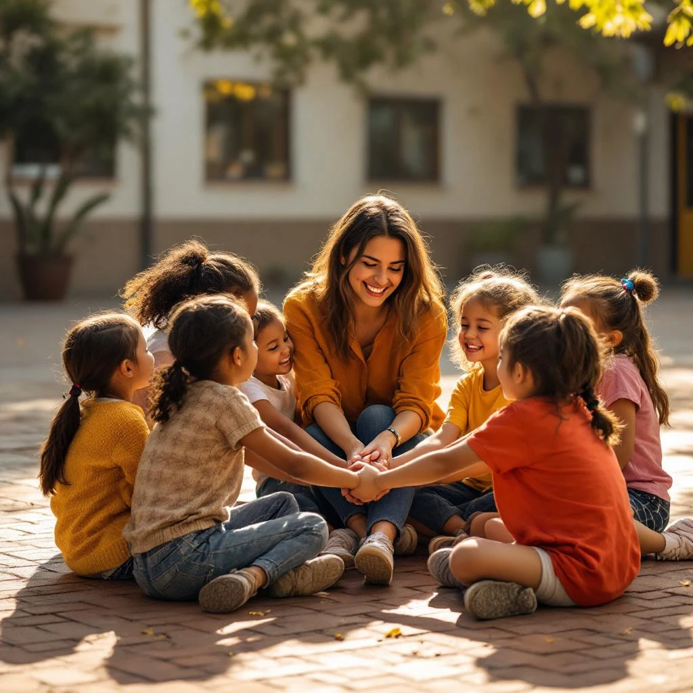
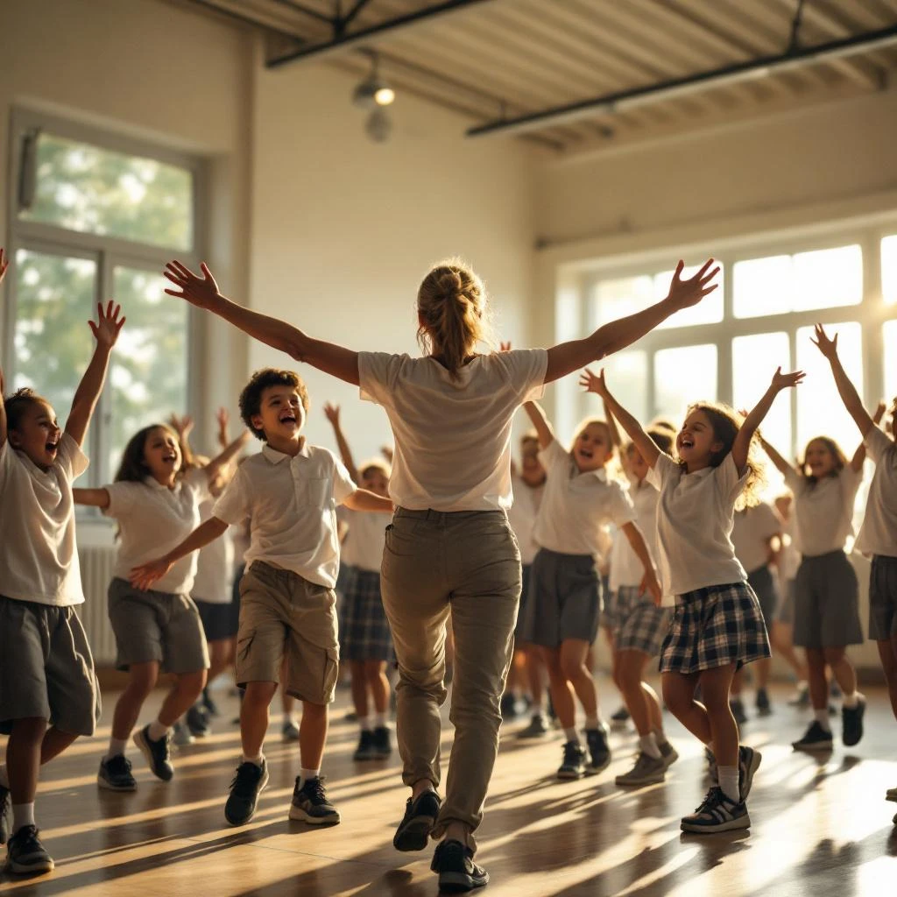
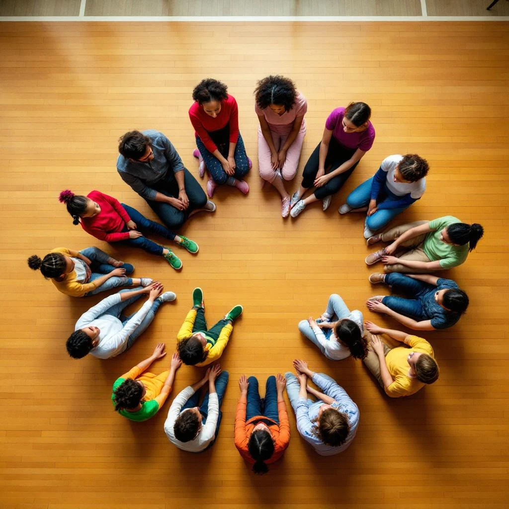
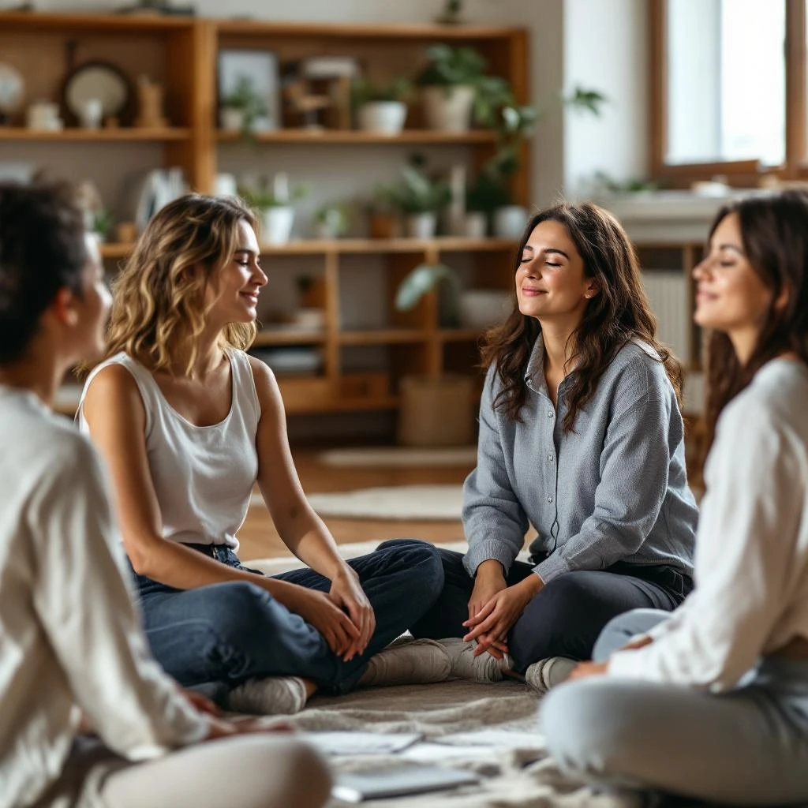

Acompañamos comunidades educativas con metodología Biodanza para que niños, docentes y familias estén más conectados, más sanos y más felices.

"Existe un antes y un después. La comunidad entera cambia cuando se trabaja desde el corazón."
La mayoría de los sistemas educativos entrenan la mente mientras el cuerpo y las emociones esperan afuera. Los niños aprenden datos, pero no siempre aprenden a relacionarse. Los docentes enseñan contenidos, pero a veces olvidan cuidarse a sí mismos. Las familias quieren lo mejor, pero no siempre tienen las herramientas.
¿Y si el bienestar emocional no fuera un extra sino la base?
¿Y si prevenir fuera más poderoso que intervenir?
¿Y si el cambio real requiriera a toda la comunidad?
¿Y si el cuerpo y el movimiento fueran parte del aprendizaje?
Creemos que sí es posible. Y lo hacemos.
Usamos Biodanza — una metodología que integra música, movimiento y vínculo grupal — para desarrollar las habilidades socioemocionales que los colegios necesitan hoy.
Intervenimos antes de que los problemas se instalen.
Música, movimiento y emoción al servicio del desarrollo humano.
Niños, docentes y familias en el mismo proceso.
Diagnósticos con escalas validadas internacionalmente.
Psicólogos, educadores y facilitadores de Biodanza.
Metodología biocéntrica + recursos tecnológicos actualizados.

Porque el bienestar de un niño no depende solo del aula.


desarrollo cerebral ocurre antes de los 6 años
ROI comprobado en programas preventivos
reducción de conflictos escolares
docentes reportan mejor clima de aula
"Existe un antes y un después para toda la comunidad educativa. Los niños llegaban al lunes felices. Eso no lo habíamos visto antes."
— Directora, colegio participante
Programas anuales, semestrales y trimestrales. Metodología experiencial adaptada a cada etapa del desarrollo.
Conocer programaFormación en habilidades socioemocionales, convivencia y bienestar. Modalidad online y presencial.
Ver formaciónEscuela para Padres. Habilidades parentales y crianza consciente para fortalecer el vínculo familiar.
Ver programaEscuela de Líderes Juveniles. Liderazgo empático y consciente para los que liderarán el futuro.
Ver másSomos Educa Consciente nace del encuentro de dos trayectorias comprometidas con el desarrollo humano, la educación viva y el trabajo desde el cuerpo y las emociones.
Paisajista, madre de tres, Directora de la Escuela Biodanza AMAR y fundadora de BioFest! Miembro de AFABI. Lleva años construyendo espacios donde el movimiento, la música y el vínculo transforman comunidades.
amandapaz.clMatrona con profundo compromiso por el bienestar de las personas desde su primera etapa de vida. Facilitadora de Biodanza con vocación por construir comunidades educativas más sanas y conectadas.
katherinegrossg@gmail.comAsociación de Facilitadores de Biodanza de Chile. La red profesional que certifica y avala la práctica de la metodología Biodanza en el país.
Conversemos sobre tu colegio, tus desafíos y el programa que puede transformar tu comunidad.